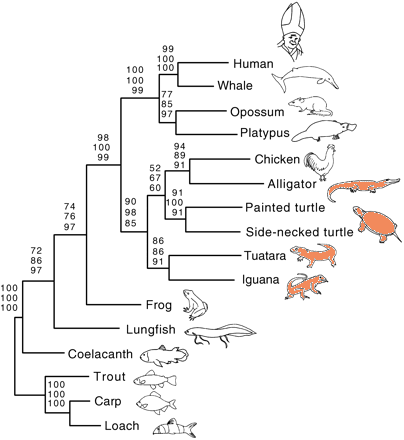

ABOUT AND "FAQ"
This database provides a catalogue of all living reptile species and their classification. The database covers
all living snakes, lizards, turtles, amphisbaenians, tuataras, and crocodiles. Currently there are more than
10,000 species including another 2,800 subspecies (statistics). The database focuses on taxonomic data, i.e.
names and synonyms, distribution and type data and literature references. There is not much other information in
the database, such as ecological or behavioural information, although we are working to add such data. The
database has no commercial interest and therefore depends on contributions from volunteers. Most of our data
comes from published sources which is curated with help from our editors. The Scientific Advisory Board (SAB)
advises us with contentious taxonomic decisions.
What is a reptile?
Traditionally reptiles are lizards, snakes, turtles, and crocodiles as well as the less obvious groups of
tuataras and amphisbaenians. These groups are also covered by this database. But strictly speaking, reptiles
are not that easy to define. Phylogenetically reptiles are not an isolated evolutionary lineage like birds.
In fact, crocodiles are more closely related to birds than to lizards, so the birds should be part of the
reptile class as well. Or the crocodiles should be considered as birds! For a more detailed discussion check
out the Tree of Life page on amniotes, the CNAAR page on vertebrate taxonomy, or the Wikipedia page on
reptiles. By the way - this database and Wikipedia are quite heavily cross-referenced.

Graphic of the phylogenetic relationships of crocodiles, turtles, lizards, and tuataras based on mitochondrial DNA sequences. Note that snakes would group with lizards in this kind of tree. Additional information
Figure from Zardoya & Meyer (1998). Similar trees were obtained by Cao et al. (2000), Iwabe et al. (2005), Jiang et al. (2007), and Chiari et al. (2012). However, in some studies (Mallat & Winchell 2007) turtles formed a clade separate from squamates and crocodiles and thus complicate the situation a bit more. Snakes nest within lizards (here represented by "Iguana").
For a slightly alternative topology see Werneburg et al. 2009 (Figure 4) where turtles are a sister clade to...
How can I identify a species using the database?
The database does not currently allow searches for species characters. However, if you know the origin of a specimen, you may simply search the DISTRIBUTION field for the country (or state in some cases) and the FAMILY field for a higher taxon, e.g., "turtle", "snake", or "Polychrotidae" (if it looks like an anole). While there are no common names for families yet in the database, you can look up the scientific name on the Higher Taxa page. Combining different criteria in one search should narrow down your choices to a few species for most countries. You can help improve this feature by submitting photos to info@reptile-database.org.
How does the database deal with new taxonomies and species concepts?
As Thiele and Yeates (Nature 419, 337; 2002) and many other authors have highlighted, species and other taxa are hypotheses, not facts. We try to reflect different opinions by mentioning them in the database or on the family pages. We are somewhat conservative regarding new taxonomic concepts, mainly because these hypotheses often change with each new DNA sequence that becomes available. We typically wait to see if proposed changes gain wider acceptance in the literature. We also adhere to the biological species concept, as we believe that DNA sequences alone cannot define species due to their inability to predict reproductive or ecological characteristics. Significant genetic differences do not necessarily imply reproductive isolation. Thus, do not be surprised if the database does not immediately follow each elevation of subspecies to species level, although we may adopt changes that gain broader acceptance by independent authors. Note that assignments of species to different or new genera are initially listed in the synonyms field, indicating a "probation period" until the name gains official recognition by the scientific community.
How complete is the literature database? Can it replace the Zoological Record or BIOSIS?
The literature in the database is complete for all species descriptions (at least those that are still valid), fairly complete for taxonomic changes, and incomplete for non-taxonomic literature. If you are seeking literature on the behavior, ecology, or husbandry of reptiles, you should use other resources such as the Zoological Record or BIOSIS.
Who runs the database?
Editor and curator in charge is Peter Uetz, an associate professor of biology at Virginia Commonwealth University. The database software is maintained by Jiri Hosek. Photos are managed by Paul Freed, who has also contributed more than 1,100 photos of almost 900 species to the Reptile Database. Rocio Aguilar is the Social Media editor and manages the Facebook, Twitter, and Instagram accounts. All team members are unpaid and volunteer as they run the database, but the database depends even more on a large number of additional volunteers as regular contributors, including the curation team (who reads scientific papers and extracts the gist of them), as well as Barry Baker, Jirka Schmidt, and a number of Wikipedia authors. Although we are not a wiki, contributions are always welcome! And we do have a page on Wikipedia!
A short history of the Reptile Database
Peter Uetz founded the database when he was a graduate student at EMBL in 1995. He simply took advantage of a group of people who ran the EMBL DNA sequence database and essentially used their technology. By the end of 2006, everybody who was originally involved in the database had left EMBL, and so the lab was not willing to support it anymore. In early 2007, the database moved to a new server at TIGR, now the JCVI, which ceased to support the database in July 2010. The database itself has been hosted by reptarium.cz since then. See also Uetz et al. 2021 for more details.
Data Structure
All species entries have the following structure, e.g., Podarcis muralis.
Programmatic Access (API)
You can access the database programmatically by using our webservices. For more details see the interfaces page.
Current status (11 Sep 2021)
See also our species stat and News.
- 11,600 species and ~2,200 subspecies
- 62,000 references
- 10,000 web links (to outside photos and information)
- ~7,000 species with photos or links to photos on the web
- 11,000 species with type information
- 11,000 species with type localities
- 9,100 species with common names (mostly English)
Update Schedule
The web database is updated every 3 months or so. Depending on submissions from contributors, the amount of
updated material may differ. But usually hundreds of species records get edited and dozens of references
added in each new release. The date of the latest update is given on the Home Page headline or on the News
Page.
How can I cite the database?
There are several ways of citing the database, either by citing one of the papers about the database, e.g.
- Uetz, P. & Etzold, T. (1996) The EMBL/EBI Reptile Database. Herpetological Review 27 (4): 174-175
- Uetz, P. & Stylianou, A. (2018) The original descriptions of reptiles and their subspecies. Zootaxa 4375: 257-264
- Uetz, P. et al. (2021) A Quarter Century of Reptile and Amphibian Databases. Herpetological Review 52 (2): 246-255
Or by citing the URL according to a publisher's suggested format, e.g.
Uetz, P. (editor), The Reptile Database, http://www.reptile-database.org, accessed May 23, 2021.
Or by citing the CD version of the database, e.g.
Uetz, P. (2006), The EMBL Reptile Database CD-ROM edition, March 2006.
Extinct Taxa (Dinosaurs and subfossil species)
Are not covered by this database. A few taxa are included in the Living Reptiles database that most likely
have become extinct only recently (i.e. since the Pleistocene or during human history). They can be found by
searching for the term "extinct" in the Comments field.
Contributions
The usefulness of this database depends on your contributions. Send us an e-mail:
submit@reptile-database.org.
HOW TO CONTRIBUTE PHOTOS
We are always interested in good photos, especially of species which are not yet pictured in the database.
Note that you should be the owner of the photograph or obtain permission from the photographer. Ideally you
should also include a copyright statement right in the photo including a locality where the picture was
taken. Finally, JPGs should have a minimum size of about 800 x 600 pixels (original files are fine, we can
process them). If you can, please take photos of an animal from multiple sides, ideally whole animal and
close-up of head from the side and the top, plus additional details. Often details are required for proper
identification. Please send photos to photos@reptile-database.org.
References
Cao et al. (2000) Phylogenetic position of turtles among amniotes: evidence from mitochondrial and nuclear
genes. Gene 259: 139-148
Chiari, Ylenia; Vincent Cahais, Nicolas Galtier and Frederic Delsuc 2012
Phylogenomic analyses support the position of turtles as the sister group of birds and crocodiles
(Archosauria).
BMC Biology 10:65
Iwabe, N. et al. (2005) Sister Group Relationship of Turtles to the Bird-Crocodilian Clade Revealed by
Nuclear DNA-Coded Proteins. Molecular Biology and Evolution 22 (4): 810-813
Jiang et al. (2007) Comparative mitochondrial genomics of snakes: extraordinary substitution rate dynamics
and functionality of the duplicate control region.
BMC Evolutionary Biology 7: 123
Mallatt, Jon and Christopher J. Winchell (2007) Ribosomal RNA genes and deuterostome phylogeny revisited:
More cyclostomes, elasmobranchs, reptiles, and a brittle star.
Molecular Phylogenetics and Evolution 43 (3): 1005-1022
Zardoya, R. & A. Meyer (1998)
Complete mitochondrial genome suggests diapsid affinities of turtles.
Proc. Natl. Acad. Sci. USA 95: 14226-14231
See also: Publication on and from the Reptile Database